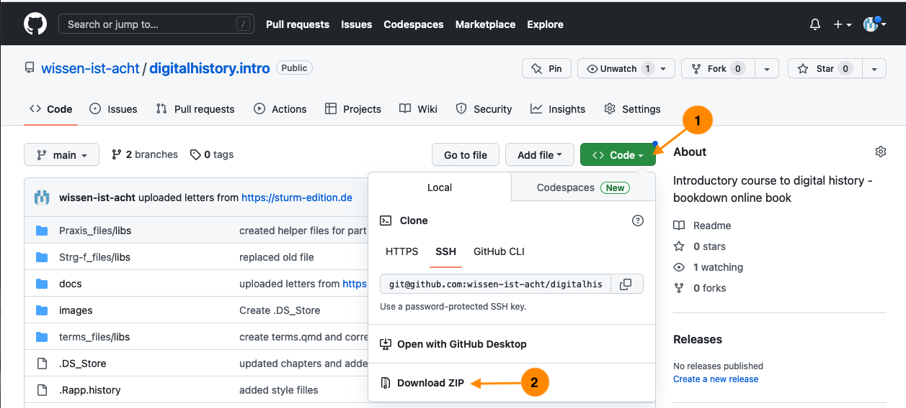
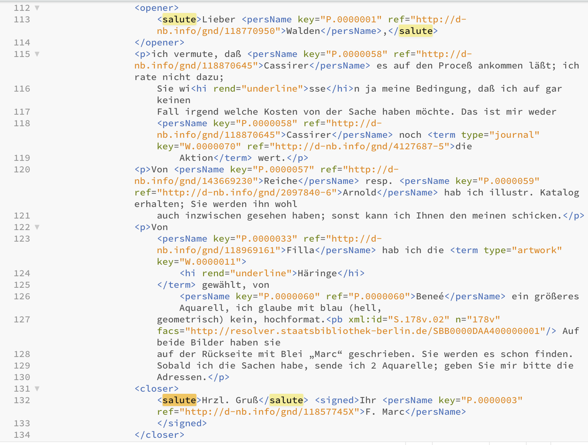

8 Durch die Hintertür
Bevor wir uns näher mit dem Beispielkorpus der Briefedition befassen, werfen wir einen kurzen Blick auf die Interaktionsmöglichkeiten mit dem Computer und wie wir diese für unsere Arbeit als Historiker:innen nutzen können, sei es für die Erhebung, die Aufbereitung oder die Analyse von Daten.
Es gibt zwei Arten, um mit einem Computer zu interagieren bzw. ihn zu nutzen: über ein Graphical User Interface (GUI), also vor allem mit der Maus und durch das Anklicken von Objekten, oder, etwas direkter, über die Kommandozeile1. Um via GUI eine Datei “Brief1.txt” im Ordner “Briefe” zu löschen, öffnet man den Finder (Mac), den Explorer (Windows) oder den Filebrowser der Wahl (Linux), klickt sich zum Ordner “Briefe”, macht einen Rechtsklick auf die zu löschende Datei “Brief1.txt”, klickt “In den Papierkorb legen” oder zieht die Datei mit der Maus direkt dorthin. Dieselbe Aktion kann man als Kommando schreiben: Man öffnet das Terminal (Linux oder Mac; den Finder öffnen und im Suchfenster “Terminal” eingeben und Programm öffnen) oder eine PowerShell (Windows; mit der rechten Maustaste auf das Startsymbol klicken, dann “Windows PowerShell” auswählen), navigiert im sich öffnenden Fenster mit Texteingabe zum entsprechenden Ordner, bspw. cd Documents/Briefe + ‘Enter’ (Mac und Linux) bzw. cd ./Documents/Briefe (Windows) und gibt dort das Kommando rm Brief1.txt ein, das mit der Entertaste ausgeführt wird.
(base) serina00@dg-19-mac-02 ~ % cd Documents/Briefe(base) serina00@dg-19-mac-02 Bilder % rm Brief1.txtVorgehen in der Kommandozeile bzw. im Terminal auf MacOS
Die beiden Vorgehensweisen unterscheiden sich dabei in drei Punkten:
- Das Kommando
rmist endgültig, die Datei ist ohne Übergangszeit im Papierkorb gelöscht. - Das Kommando lässt sich relativ simpel auf eine Vielzahl von Dokumenten anwenden, wobei ganz unterschiedliche Bedingungen beachtet werden können, und es lässt sich mit anderen Kommandos verbinden.
- Terminal sieht k3wl aus.
Bevor wir den zweiten – und für unsere Arbeit hilfreichsten – Unterschied genauer anschauen, kurz zur Kommandozeile.
8.1 Shell 101
In einem Terminal/einer Shell – zur Unterscheidung siehe Fußnote 1 – können Kommandos bzw. Programme ausgeführt werden, die auf der Datenstrukturebene stattfinden – wie beispielsweise das Löschen einer Datei, rm Dateiname.xyz (rm für remove), oder das Erstellen eines Ordners, mkdir NeuerOrdner (mkdir für make directory). Ebenso möglich sind Operationen auf Dateninhaltsebene – wie beispielsweise das Suchen eines bestimmten Begriffs in einer Textdatei, grep 'Begriff' Textdatei.txt (Mac/Linux) bzw. Select-String -Path Textdatei.txt -Pattern 'Begriff' (Windows), oder das Auszählen mehrerer Begriffe und das Speichern des Ergebnisses in einer neuen Datei, grep -Ec '(Begriff1|Begriff2)' Textdatei.txt | wc -l > Ergebnisse.txt (Mac/Linux) bzw. (Select-String -Path Textdatei.txt -Pattern '(Begriff1|Begriff2)'.Matches.Count > Ergebnisse.txt (Windows) – die Kommandos werden weiter unten nochmals einzeln erklärt.
Woher weiss Ihre Shell aber, was sie ausführen soll, wenn Sie rm oder grep/String-Select eintippen? Es gibt zahlreiche Shell-Programme, die bereits auf Ihrem System vorinstalliert sind, und mit denen Sie vieles tun können – öffnen Sie Ihre Shell und tippen Sie date ein: Das aktuelle Datum mit Uhrzeit erscheint. (Ihre Shell sucht nach dem ersten Argument, dem Befehl date, im Filesystem des Computers, und wenn sie fündig wird, führt sie eine Aktion mit den entsprechenden Parametern aus.)
tmi: Wenn Sie echo $PATH im Terminal (Mac/Linux) bzw. $env:PATH (Windows) eingeben, sehen Sie eine Auflistung der Orte, an denen nach Befehlen gesucht wird. Tippen Sie which date ein und drücken Sie ‘Enter’, um zu sehen, wo das Programm “date” in Ihrem Computer liegt.
Falls Sie einen Befehl eintippen, den es nicht gibt bzw. für den kein installiertes Programm auf Ihrem Computer existiert, bekommen Sie eine simple Fehlermeldung – kaputtgehen kann dabei nichts:
(base) serina00@dg-19-mac-02 ~ % nonsensecommand not found: nonsenseDer Output auf Windows ist etwas ausführlicher:
nonsense: The term 'nonsense' is not recognized as a name of a cmdlet, function, script file, or executable program.
Check the spelling of the name, or if a path was included, verify that the path is correct and try again.Das aktuelle Datum wird Ihnen wahrscheinlich auch in Ihrer Toolbar angezeigt, und einen neuen Ordner können Sie per Rechtsklick erstellen, dazu brauchen Sie das Terminal nicht unbedingt. Um einen Begriff in einem Textdokument zu finden und alle Vorkommen zu zählen, können Sie das Dokument öffnen, Strg-F drücken, den Begriff eingeben und das Ergebnis sehen. Wenn Sie nach mehreren Begriffen suchen wollen, müssen Sie dieselbe Aktion zweimal ausführen: Strg-F, Begriff 2. Und wenn Sie mehrere Dateien durchsuchen möchten, beispielsweise um herauszufinden, wie oft die Grußformel “Mit herzlichem Gruß” in einer Briefsammlung vorkommt, müssen Sie die Suche in jeder Datei einzeln ausführen. Wenn Sie dann noch nach der Variante “Mit herzlichen Grüßen” oder gar “Herzl. Gruß” suchen wollen, vervielfacht sich Ihre Arbeit.
Sie können dasselbe auch mit dem Terminal machen und einige der Built-in-Programme nutzen, um sich Zeit und Arbeit zu sparen.
8.2 Strg-F 2.0
Wir arbeiten wie im vorangegangenen Kapitel mit einem Teilkorpus der Quellenedition “Der Sturm”, nämlich mit allen Briefen, die von Franz Marc verfasst wurden. Um die folgenden Schritte nachzuvollziehen, laden Sie sich den Ordner “letters_Der_Sturm” herunter. Sie können dazu entweder das vollständige GitHub-Repository zu diesem Guide als Zip-Datei herunterladen und entpacken, und im Ordner “docs” befindet sich der Ordner “letters_Der_Sturm”.

Sie können das Repositorium auch über die Kommandozeile klonen
(base) serina00@dg-19-mac-02 ~ % git clone https://github.com/wissen-ist-acht/digitalhistory.intro.gitoder als bequeme Variante diesen Direktlink nutzen.
Wenn Sie die Schnittstelle der Webseite ausprobieren wollen, kommen Sie mit wenigen Kommandos an die Dateien.
Mit dem ersten Kommando erstellen wir eine Datei “briefe_marc.xml” mit den Dateinamen aller Briefe, die von Franz Marc geschrieben wurden – über das Register auf der Webseite wissen wir, dass er die Personen-ID P.0000003 hat; die URL zur Abfrage der Schnittstelle können wir der Dokumentation entnehmen:
curl https://sturm-edition.de/api/persons/P.0000003 --output briefe_marc.xmlWenn Sie die Datei mit einem Editor öffnen, der XML-Dateien lesen kann, sehen Sie, dass neben den Dateinamen, die nach “target=” stehen, noch viel Beifang ist, den wir loswerden möchten:
<person xmlns="http://www.tei-c.org/ns/1.0" source="http://d-nb.info/gnd/11857745X" xml:id="P.0000003">
<persName type="pref">Marc, Franz</persName>
<persName type="fn">Franz Marc</persName>
<linkGrp type="files">
<ptr n="Bl.375" target="Q.01.19191212.JVH.01.xml"/>
<ptr n="Bl.377" target="Q.01.19200114.JVH.01.xml"/>
<ptr n="Bl.219" target="Q.01.19160128.FMA.01.xml"/>
<ptr n="Bl.222" target="Q.01.19160205.FMA.01.xml"/>
<ptr n="Bl.223" target="Q.01.19160302.FMA.01.xml"/>
<ptr n="Bl.218" target="Q.01.19160101.FMA.01.xml"/>
<ptr n="Bl.221" target="Q.01.19160122.FMA.01.xml"/>
<ptr n="Bl.220" target="Q.01.19160115.FMA.01.xml"/>
<ptr n="Bl.207" target="Q.01.19150703.FMA.01.xml"/>
...Denn eigentlich brauchen wir nur die Dateinamen, um die Dateien mit einem entsprechenden Befehl herunterladen zu können. Mit dem zweiten Kommando erstellen wir eine deswegen eine neue Datei, in der die einzelnen extrahierten Dateinamen mit dem Download-Kommando curl kombiniert und um die entsprechende URL zum Download ergänzt werden:
cat briefe_marc.xml | grep -o 'Q.*xml\b' | perl -nle 'print "curl -o $_ https://sturm-edition.de/api/files/$_ "' > dateinamen_briefe_marc.txtDie Datei “dateinamen_briefe_marc.txt” sieht so aus:
curl -o Q.01.19191212.JVH.01.xml https://sturm-edition.de/api/files/Q.01.19191212.JVH.01.xml
curl -o Q.01.19200114.JVH.01.xml https://sturm-edition.de/api/files/Q.01.19200114.JVH.01.xml
curl -o Q.01.19160128.FMA.01.xml https://sturm-edition.de/api/files/Q.01.19160128.FMA.01.xml
curl -o Q.01.19160205.FMA.01.xml https://sturm-edition.de/api/files/Q.01.19160205.FMA.01.xml
curl -o Q.01.19160302.FMA.01.xml https://sturm-edition.de/api/files/Q.01.19160302.FMA.01.xml
curl -o Q.01.19160101.FMA.01.xml https://sturm-edition.de/api/files/Q.01.19160101.FMA.01.xml
curl -o Q.01.19160122.FMA.01.xml https://sturm-edition.de/api/files/Q.01.19160122.FMA.01.xml
curl -o Q.01.19160115.FMA.01.xml https://sturm-edition.de/api/files/Q.01.19160115.FMA.01.xml
curl -o Q.01.19150703.FMA.01.xml https://sturm-edition.de/api/files/Q.01.19150703.FMA.01.xml
curl -o Q.01.19150417.FMA.01.xml https://sturm-edition.de/api/files/Q.01.19150417.FMA.01.xml
curl -o Q.01.19151106.FMA.01.xml https://sturm-edition.de/api/files/Q.01.19151106.FMA.01.xml
curl -o Q.01.19150918.FMA.01.xml https://sturm-edition.de/api/files/Q.01.19150918.FMA.01.xml
...cat briefe_marc.xml gibt den Inhalt der Datei ins Terminal; grep -o 'Q.*xml\b' findet in diesem Inhalt alle Zeichenketten zwischen “Q” und “xml”, wobei nach “xml” durch das Hinzufügen von “ das Zeichenende angezeigt ist; die 54 gefundenen Zeichenketten werden in je eine neue Zeile geschrieben, wobei mit curl -o $_ der Befehl”curl -o” und mit $_ als Platzhalter die Zeichenkette (also der Dateiname) geschrieben wird, gefolgt von “https://sturm-edition.de/api/files/\(_" und mit `\)_wieder die Zeichenkette (also wieder der Dateiname). Mit einem dritten Kommando,bash, führen wir die erstellte Datei aus, d.h. die in ihr stehenden Kommandos werden ausgeführt -- also viacurl` (Client URL) die Briefe heruntergeladen.
bash dateinamen_briefe_marc.txtEgal, wie Sie die Dateien heruntergeladen haben, sollten Sie 54 Briefe im xml-Format vorfinden. Öffnen Sie dann das Terminal (Mac/Linux) bzw. die PowerShell (Windows) und bewegen sich mit cd, also change directory, in den Ordner (directory), in dem Ihre Textdateien liegen.
In meinem Fall ist das unter Documents/GitHub/digital_history_intro/docs/letters_Der_Sturm.
(base) serina00@dg-19-mac-02 ~ % cd Documents/GitHub/digital_history_intro/docs/letters_Der_Sturm`Bei den meisten von Ihnen ist das vermutlich unter “Downloads” – probieren Sie es aus.
(Um zu prüfen, was in einem Ordner liegt, können Sie im Terminal ls (für list) eingeben, bzw. in der PowerShell dir (für directory):
% lsQ.01.19140115.FMA.01.xml Q.01.19150315.FMA.02.xml
Q.01.19140119.FMA.01.xml Q.01.19150327.FMA.01.xml
Q.01.19140121.FMA.01.xml Q.01.19150417.FMA.01.xml
Q.01.19140124.FMA.01.xml Q.01.19150501.FMA.01.xml
Q.01.19140125.FMA.01.xml Q.01.19150615.FMA.01.xml
Q.01.19140125.FMA.02.xml Q.01.19150703.FMA.01.xml
Q.01.19140409.FMA.01.xml Q.01.19150710.FMA.01.xml
Q.01.19140414.FMA.01.xml Q.01.19150818.JVH.01.xml
Q.01.19140421.FMA.01.xml Q.01.19150827.FMA.01.xml
Q.01.19140507.FMA.01.xml Q.01.19150906.FMA.01.xml
Q.01.19140512.FMA.01.xml Q.01.19150911.FMA.01.xml
...8.2.1 Erste Analysen
Wenn Sie in den Ordner navigiert sind, in dem die Briefdateien liegen, können Sie mit einem einzeiligen Kommando die Suchvorgänge, die Sie nacheinander mit Strg-F mit jeder einzelnen Datei in einem Texteditor ausführen würden, mit dem Programm grep (Global Regular Expression Print, Mac/Linux) bzw. Select.String (Windows) für alle Briefe in diesem Ordner vornehmen, indem Sie alle Dateien, die auf “.xml” enden, in die Suche aufnehmen. Die Ergebnisse – bei dieser Suche nach “Mit herzlichem Gruß” oder “Mit herzlichen Grüßen” ein Treffer in einem Brief – können Sie sich im Terminal anschauen:
Mac/Linux:
% grep -E -i '(Mit herzlichem Gruß|Mit herzlichen Grüßen)' *.xml Windows:
% Select-String -Path *.xml -Pattern "(Mit herzlichem Gruß|Mit herzlichen Grüßen)"Output:
Q.01.19160115.FMA.01.xml: <salute>Mit herzlichen Grüßen für Sie beide</salute> <signed>Ihr <persName key="P.0000003" ref="http://d-nb.info/gnd/11857745X">F.Marc</persName>Die Formulierung “Mit herzlichen Grüßen” kommt also einmal im Korpus vor, und zwar im Dokument Q.01.19160115.FMA.01.xml.
Sie können auch mit wc -l (Mac/Linux) den Wordcount, die Anzahl der gefundenen Treffer auf Zeilenebene, -l zählen, bzw. mit Matches.Count (Windows), und mit > in eine neue Datei schreiben (die während der Ausführung des Kommandos erstellt wird):
Mac/Linux:
% grep -E -i '(Mit herzlichem Gruß|Mit herzlichen Grüßen)' *.xml | wc -l > count_greetings.txtWindows:
% (Select-String -Path *.xml -Pattern "(Mit herzlichem Gruß|Mit herzlichen Grüßen)").Matches.Count > count_greetings.txtWenn Sie die neu erstellte Datei count_greetings.txt öffnen, die sich im selben Ordner wie die Briefe befindet, sollte dort “1” stehen, weil unsere Suche einen Treffer ergeben hat.
Das Kommando grep (Mac/Linux) hat im obigen Befehl den Zusatzparameter E bekommen, das Kommando Select.String (Windows) den Parameter -Pattern, d.h. wir suchen nicht eine exakte Zeichenkette, sondern nutzen Möglichkeiten zur Mustersuche, zur Suche nach Patterns. Diese werden formuliert als sog. Extended Regular Expressions (von hier kommt das E), als reguläre Ausdrücke. Wir haben in unserer Suchabfrage nämlich nicht nur nach “Mit herzlichem Gruß” gesucht, sondern auch nach “Mit herzlichen Grüßen”, formuliert mit dem Zeichen “|”, hier als “oder” zu lesen. Mithilfe Regular Expressions können wir unsere Suche weiter ausbauen und nach verschiedenen Varianten/Schreibweisen auf einmal suchen.
Regular Expressions haben verschiedene flavours – je nach Programmiersprache werden Dinge etwas anders formuliert, und manche Defaulteinstellungen unterscheiden sich. In unserem Fall benötigt grep noch den Parameter -i, um Groß- und Kleinschreibung zu ignorieren. Select.String ignoriert dies by default und braucht keinen zusätzlichen Parameter. Solche Feinheiten sind bei der Arbeit mit Regular Expressions wichtig zu wissen, aber das lernt man on the go.
Mac/Linux:
% grep -E -i '(Mit herzlichem Gru(ß|ss)|Mit herzlichen Grü(ß|ss)en|H(e|.?)rzl. Gru(ß|ss))' *.xml | wc -lWindows:
% (Select-String -Path *.xml -Pattern "(Mit herzlichem Gru(ß|ss)|Mit herzlichen Grü(ß|ss)en|H(e|.?)rzl. Gru(ß|ss))").Matches.Count > count_greetings.txtSo formuliert finden wir 17 Treffer für eine Grußformel, mit den möglichen Schreibweisen “Mit herzlichem Gruß”, “Mit herzlichem Gruss”, “Mit herzlichen Grüßen”, “Mit herzlichen Grüssen”, “Herzl. Gruß”, “Herzl. Gruss”, “Hrzl. Gruß”, “Hrzl. Gruss”.
Wenn wir herausfinden möchten, ob Grüße mal herzlich, mal hrzl. oder freundlich verschickt wurden, können wir die Suche und die Art der Ausgabe modifizieren:
Mac/Linux:
% grep -E -i 'Gr(u|ü)(ß|ss)' *.xmlWindows:
% Select-String -Path *.xml -Pattern "Gr(u|ü)(ß|ss)"Output:
Q.01.19140115.FMA.01.xml: stets sofort antworte; es muß verloren gegangen sein. Grüßen Sie bitte D<hi rend="super">
Q.01.19140119.FMA.01.xml: <salute>Hrzl. Gruß</salute> <signed>Ihr <persName key="P.0000003" ref="http://d-nb.info/gnd/11857745X">F. Marc</persName>
Q.01.19140125.FMA.02.xml: <salute>Hrzl. Gruß</salute>
Q.01.19140421.FMA.01.xml: <closer>Gute Besserung <persName key="P.0000002" ref="http://d-nb.info/gnd/118891456">Ihrer Frau</persName> u. <salute>viel Grüße von mir</salute> <signed>Ihr <persName key="P.0000003" ref="http://d-nb.info/gnd/11857745X">Fz Marc</persName>
Q.01.19140507.FMA.01.xml: <salute>besten Gruß</salute>
Q.01.19140730.JVH.01.xml: herzlichsten Grüssen für Sie beiden</salute> <signed>Ihre <persName key="P.0000004" ref="http://d-nb.info/gnd/11854764X">Jacoba van<hi rend="underline">Heemskerck</hi>
Q.01.19140831.FMA.01.xml: <salute>Hrzl. Gruß von Eurem Freund in Waffen</salute> <signed>
Q.01.19140908.JVH.01.xml: <salute>Viele herzlichsten Grussen für Sie beiden</salute> auch von Frl
Q.01.19141113.FMA.01.xml: <salute>Hrzl. Gruß 1 x 2</salute> <signed>Ihr <persName key="P.0000003" ref="http://d-nb.info/gnd/11857745X">Fz. Marc</persName>
Q.01.19141129.JVH.01.xml: <salute>Viele herzliche Grüssen für Sie beiden</salute>
Q.01.19150112.FMA.01.xml: <salute>Hrzl. Gruß Ihnen beiden</salute>
Q.01.19150116.FMA.01.xml: <salute>Mit herzl. Gruß Ihnen beiden</salute> <signed>Ihr <persName key="P.0000003" ref="http://d-nb.info/gnd/11857745X">FrM</persName>.</signed>
Q.01.19150121.FMA.01.xml: <salute>Herzl. Gruß</salute> <signed>Ihr <persName key="P.0000003" ref="http://d-nb.info/gnd/11857745X">Fz. Marc</persName>
Q.01.19150131.JVH.01.xml: <salute>Viele herzliche Grüssen für Sie beiden</salute>
...Mit diesem Kommando durchsuchen wir also den Text nach dem Muster Gr(u|ü)(ß|ss), also Beginn mit Gr oder gr, dann folgt entweder ein u oder ein ü, dann entweder ein ß oder ss. Weil wir kein Wortende markiert haben (das ginge mit \b), werden auch “Grüße” oder “Grüssen” gefunden.
Wenn Sie sich während der Lektüre des vorangegangenen Kapitels auf der Webseite durch die Briefe geklickt haben, werden Sie festgestellt haben, dass ein Brief nicht immer mit “Gruß” oder “Grüßen” endet. Beim Output der Suchanfragen im Terminal sehen Sie, dass alle Grußformeln von einem Tag-Paar umgeben sind: <salute> kennzeichnet den Beginn des Grußes, </salute> das Ende. Öffnen Sie eine der Briefdateien und suchen Sie nach “salute”. (Wenn Sie keinen XML-fähigen Editor auf dem Computer haben, öffnen Sie die Datei einfach mit einem Browser.)

Wie Sie sehen, gibt es das Tag-Paar <salute>-</salute> zweimal, einmal umrahmt vom Tag-Paar <opener>-</opener>, einmal von <closer>-</closer>. Die Anrede ist mit dem ersten, die Grußformel mit dem zweiten Tag-Paar markiert. Wir können also, wenn wir mit Dokumenten arbeiten, die nach festgelegten Richtlinien ausgezeichnet wurden, nach dem Element Grußformel suchen, ohne erst einen Blick in die Texte werfen zu müssen, um verschiedene Suchabfragen zu formulieren. Wir formulieren unsere Suchabfrage um:
Mac/Linux:
% grep -E -zo '<closer>[[:cntrl:]].*<salute>.*[[:cntrl:]].*<' *.xmlOutput:
Q.01.19140115.FMA.01.xml:<closer>
<salute>Hrzl.<
Q.01.19140119.FMA.01.xml:<closer>
<salute>Hrzl. Gruß</salute> <signed>Ihr <persName key="P.0000003" ref="http://d-nb.info/gnd/11857745X">F. Marc<
Q.01.19140121.FMA.01.xml:<closer>
<salute>Hrzl.</salute> <signed>Ihr <persName key="P.0000003" ref="http://d-nb.info/gnd/11857745X">FzMarc<
Q.01.19140125.FMA.02.xml:<closer>
<salute>Hrzl. Gruß<
Q.01.19140409.FMA.01.xml:<closer>
<salute>Herzl.<
Q.01.19140414.FMA.01.xml:<closer>
<salute>Hrzl.</salute> <signed>Ihr <persName key="P.0000003" ref="http://d-nb.info/gnd/11857745X">FMarc</persName>.<
Q.01.19140507.FMA.01.xml:<closer>
<salute>besten Gruß<
Q.01.19140512.FMA.01.xml:<closer>
<salute>Hrzl.</salute> <signed>Ihr <persName key="P.0000003" ref="http://d-nb.info/gnd/11857745X">Fr Marc<
Q.01.19140606.FMA.01.xml:<closer>
<salute>Hrzl.</salute> <signed>Ihr <persName key="P.0000003" ref="http://d-nb.info/gnd/11857745X">Fz. Marc<
Q.01.19140608.FMA.01.xml:<closer>
<salute>hrzl.</salute> <signed>Ihr <persName key="P.0000003" ref="http://d-nb.info/gnd/11857745X">F. Marc<
...Wenn wir die Ergebnisse direkt in eine Datei schreiben wollen, können wir das natürlich auch tun:
Mac/Linux:
% grep -E -zo '<closer>[[:cntrl:]].*<salute>.*[[:cntrl:]].*<' *.xml > Grussformeln.txtSpätestens jetzt wäre es aber an der Zeit, das Instrumentarium zu wechseln: Mit dem Terminal bzw. der Shell kann man verschiedenste Operationen durchführen, und es gibt zahlreiche kleine Programme, die man zusätzlich installieren kann – zum Parsen, also Zerlegen von XML-Dateien, zur Bearbeitung von Bilddateien oder zum Download von YouTube-Videos. Die Übersichtlichkeit ist allerdings recht begrenzt, und gerade für die Analyse von Struktur- und Textdaten gibt es weitaus geeignetere Programmiersprachen wie R oder Python, wie in Kapitel 2.2 bereits erwähnt.
Kommandozeile/Command Line, Bash, Shell oder Prompt finden sich oft als synonym genutzte Begriffe für Command Line Interfaces. Auf UNIX-basierten Betriebssystemen wie Mac OS und Linux ist das Terminal als Interface weit verbreitet; für Details: https://en.wikipedia.org/wiki/Command-line_interface#History. Windowsnutzer:innen kommen mit der PowerShell ganz gut zurecht, es empfiehlt sich eventuell die Installation von Cygwin oder MinGW, um mit einem UNIX-basierten Interface arbeiten zu können.↩︎